| 続・心理統計学の基礎 |
| 続・心理統計学の基礎 |
| 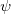 | 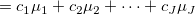 | (3.93) | ||
 |
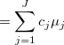 | (3.94) |
ただし、
| 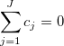 | (3.95) |
である。
メモ |
||||
Kirk (2013) では、さらに |
対比分析の中でも、直線的増加や2次曲線的に変化する傾向など、母平均の特定の増減傾向に調べるための分析は傾向分析と呼ばれる。
対比の推定量を
| 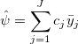 | (3.97) |
とすると、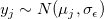の下で、
| 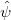 | 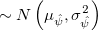 | (3.98) | ||
|
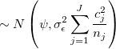 | (3.99) |
となる。
そこで、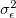を残差平均平方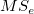で推定するとして、
| 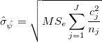 | (3.100) |
とすると、
| 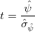 | (3.101) |
は、帰無仮説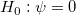の下で自由度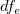の 分布に従う。 よって、対比の信頼区間は
分布に従う。 よって、対比の信頼区間は
| 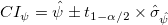 | (3.102) |
によって算出できる。
また、帰無仮説が偽であれば、非心度
| 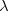 | 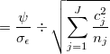 | (3.103) | ||
|
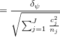 | (3.104) |
の非心分布に従う。 このとき、
| 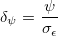 | (3.105) |
を、標準化対比といい、
| 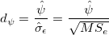 | (3.106) |
によって点推定し、非心度 からの逆変換
からの逆変換
| 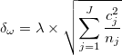 | (3.107) |
によって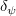のCIを算出することができる。
データPlantGrowthを用いて、2つの実験群の平均が統制群に等しいという対比を作る。 対比と標準化対比について、検定と区間推定を行う。
対比は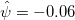と推定され、統計的に有意ではない（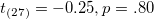）。 対比の信頼区間は 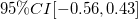。 標準化対比は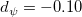と推定され、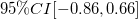。
> ### 対比分析
> data(PlantGrowth)
> cw <- matrix(c(1,-0.5,-0.5),1,3) # 対比係数
> Ms <- matrix(tapply(PlantGrowth$weight, PlantGrowth$group, mean),1,3) # 群平均
> (psi.hat <- as.numeric(cw %*% t(Ms))) # 対比の推定値
[1] -0.0615
> fit.aov <- aov(weight~group, data=PlantGrowth) # 分散分析
> (MSe <- summary(fit.aov)[[1]]$"Mean Sq"[2]) # 誤差平均平方
[1] 0.3885959
> (dfe <- summary(fit.aov)[[1]]$"Df"[2]) # 誤差自由度
[1] 27
> (sigma.psi.hat <- sqrt(MSe * sum(cw^2/10)))
[1] 0.241432
> (t <- psi.hat/sigma.psi.hat) # t値
[1] -0.2547302
> pt(q=t,df=dfe,lower.tail=T)*2 # p値
[1] 0.8008617
> ME <- sigma.psi.hat*qt(p=0.975,df=dfe) # 誤差範囲
> psi.hat + c(-ME, ME) # 対比のCI
[1] -0.5568775 0.4338775
> (std.psi.hat <- psi.hat/sqrt(MSe)) # 標準化対比の推定値
[1] -0.09865657
> ci.lambda <- conf.limits.nct(t.value=t, df=dfe, conf.level=0.95) # 非心度のCI
> ci.lambda$Lower.Limit * sqrt(sum(cw^2/10)) # 下限
[1] -0.857291
> ci.lambda$Upper.Limit * sqrt(sum(cw^2/10)) # 上限
[1] 0.6617939
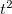は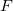分布に従うことから、
| 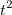 |  |
(3.108) | ||
|
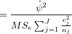 | (3.109) | ||
|
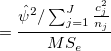 | (3.110) | ||
|
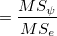 | (3.111) | ||
|
 |
(3.112) |
と平均平方の比に変換できる。
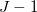個の直交対比、すなわち
| 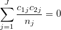 | (3.113) |
が全ての対について満たされていれば、それらの平方和の和は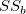に等しくなる。 つまり、
| 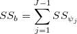 | (3.114) |
である。
さらに、群間平方和の検定のためのは
 |
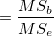 | (3.115) | ||
|
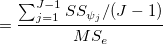 | (3.116) | ||
|
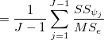 | (3.117) | ||
|
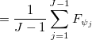 | (3.118) |
となることから、通常の平均値差の検定に関するは、個の直交対比に関する検定統計量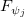の平均になる。
総括的な検定：拡散した問い
対比の検定：焦点化した問い 1
総括的な検定は、顕著な効果を示す対比から弱い効果しか示さない対比まで平均化した検定になっているので、顕著な効果を示すことが予想される対比に焦点化した検定（自由度1の検定）に比べ、検定力が低くなる可能性がある。
Šidàkの方法やBonferroni（Dunn）の方法では、検定すべき対比の数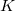に応じて有意水準が変わってしまう。
有意水準を一定のまま、組単位の誤りの確率（familywise error rate）を統制するために、Schefféの方法が用いられる。
直交対比の平方和が取り得る最大値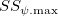は、である。 このときの値は、
|
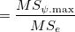 | (3.119) | ||
|
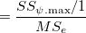 | (3.120) | ||
|
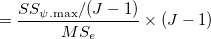 | (3.121) | ||
|
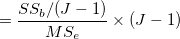 | (3.122) | ||
|
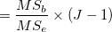 | (3.123) |
となる。 よって、対比の検定の棄却の限界値をとしておけば、「最大可能な対比が誤って有意になる確率」はとなる。 を用いて対比の検定や推定を行う場合、棄却域は
| (3.124) |
とすればよい。すると、CIは
| (3.125) |
となる。
Footnotes
| 続・心理統計学の基礎 |